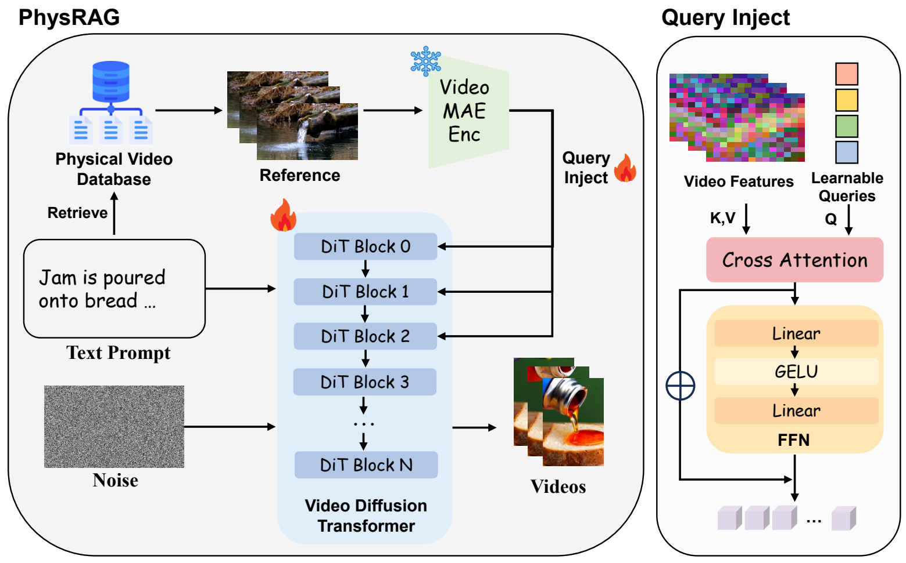
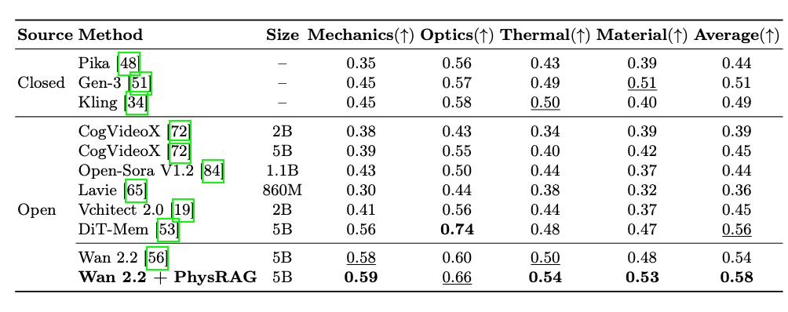
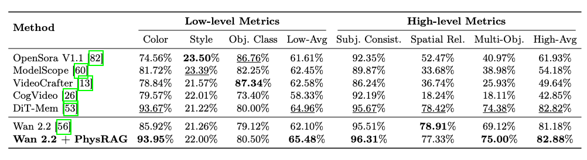
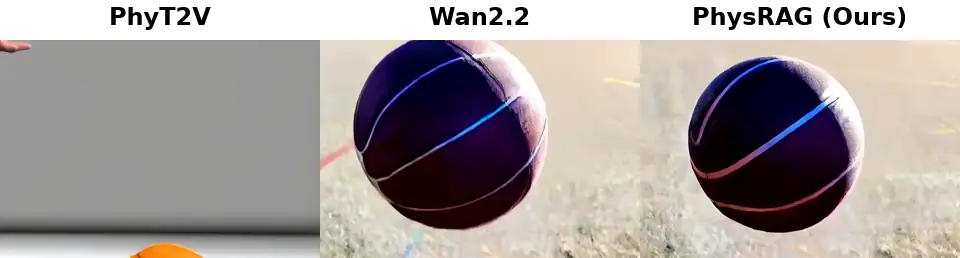
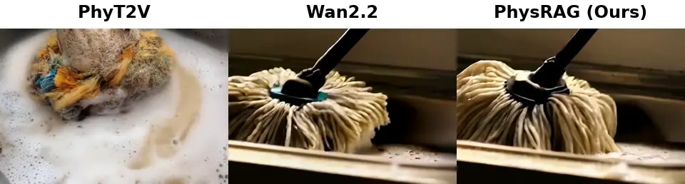
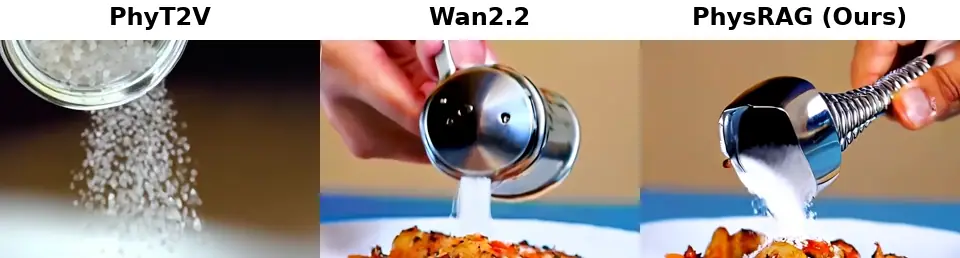

Retrieve
Retrieve the most relevant physical reference.
Accepted to ECCV 2026
1 Peking University · 2 IAII, Chinese Academy of Sciences
* Equal contribution · † Corresponding authors
Developing physically aware video generation models remains a significant challenge due to the difficulty in capturing diverse physical phenomena, such as thermal dynamics, mechanics, and optics. In this work, we introduce PhysRAG, a novel pipeline that enhances physical awareness in video generation through Retrieval-Augmented Generation (RAG). To address the issue of limited high-quality data, we design a two-stage data filtering pipeline based on the WISA-80K dataset, resulting in a curated set of 7K high-quality videos for training. Furthermore, we construct a physical video database and develop a mechanism to inject physical knowledge into a video diffusion model using learnable queries. Our method achieves state-of-the-art performance in both visual quality and physical rule compliance, surpassing existing models in benchmarks such as PhyGenBench and VBench. We conduct extensive ablation studies to validate the effectiveness of our key components, including the data filtering pipeline, RAG mechanism, and method for physical information extraction.

PhysRAG first retrieves a physics-relevant reference from a curated video library with VideoCLIP-XL and FAISS. Offline VideoMAE-V2 features are then distilled into compact physical-prior tokens by 128 learnable queries. These priors are injected into early Wan2.2 diffusion transformer blocks, improving physical consistency without changing the original text-to-video interface.
Retrieve the most relevant physical reference.
Distill VideoMAE-V2 features into compact priors.
Fuse the priors into early Wan2.2 DiT blocks.


Below are representative comparisons. From left to right: PhyT2V, Wan2.2, and PhysRAG.



If you find our work useful in your research, please consider citing.
@misc{cheng2026physragenhancingphysicsawarenessvideo,
title = {PhysRAG: Enhancing Physics-Awareness in Video Generation via Retrieval-Augmented Generation},
author = {Kexu Cheng and Zicheng Liu and Mingju Gao and Chunhe Song and Hao Tang},
year = {2026},
eprint = {2606.26916},
archivePrefix = {arXiv},
primaryClass = {cs.CV},
url = {https://arxiv.org/abs/2606.26916}
}